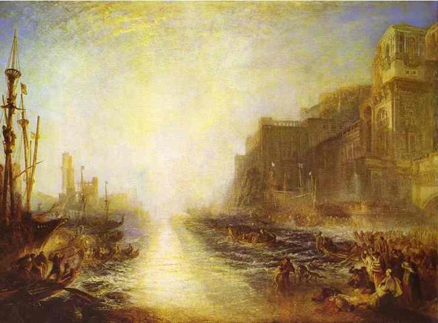

Reading Pictures, Seeing Stories
(Painting: Regulus by J.M.W Turner.)
Dear Regulus,
Sorry to hear about your death. I was told that you were locked in the darkest dungeon then dragged out and forced to stare at the sun after your eyelids had been cut off. What a pity. You died of your name; and because of your name. It is the same name as one of the brightest stars in the dark sky, if you have not yet noticed.
I am writing you this letter because I think I shall introduce Turner to you. He has portrayed your fear well. In one of his paintings, ironically titled as same as your name, Regulus, he turned the splendid sunlight to a source of fear to the viewers (and who would have thought such a beautiful thing is to be fear of, perhaps only you would know it best). The extremeness of the sunlight is not to be thankful. The sunlight in the painting is an outrage to the viewers: it is too bright to be enjoyable. Indeed, people in the painting must have felt the same way. Strangely, people in the painting do not try to avoid the sunlight. In fact, they seem to all face it and even enjoy the unforgivable rays of your torture. Perhaps, only when the light exists do they exist in the painting. Without the light source existing in the painting, the picture would be a complete black; darkness will be the only medium. But pain is the real medium in this painting, though you do not see any painful expression among the faces (and because most of them are blurry). It is what creates the existence of the people because only when the pain exists, do they know they exist. I’d say Turner was a believer in existentialism.
If you could have learnt the matter before your torture, you may have felt less painful. It gives you the courage to face your death, just as it is telling you: face the sun, and feel your existence.
__London, 2011